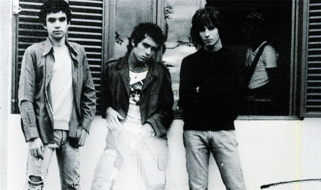
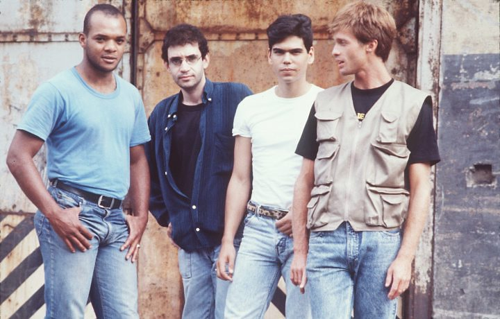
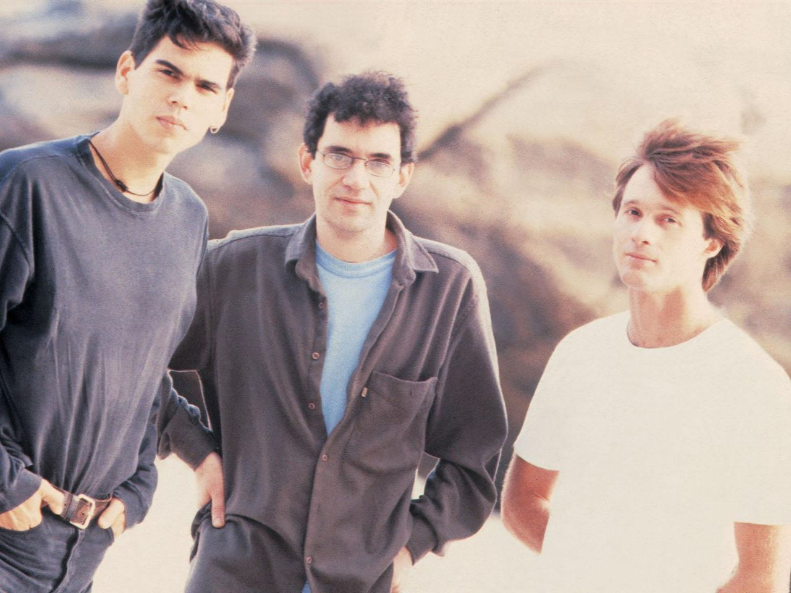
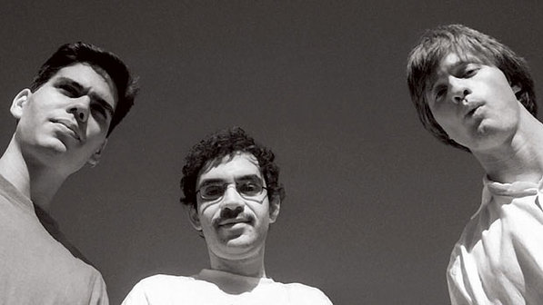

Hoje tenho o prazer de dedicar o meu primeiro post a uma das melhores bandas de rock que o Brasil já teve. Sim, estou falando da Legião Urbana. Se você gosta da música brasileira, então é importante reconhecer que eles foram um marco divisório na cena de rock brasileiro, principalmente nas décadas dos 80 e 90. É por isso e muito mais que ainda é considerada a maior banda de rock do país. Simplesmente não podem ser ignorados e agora eu explico o por quê.

Tudo tem começo
Formada em agosto de 1982, a banda surgiu literalmente de um aborto (o quê?), quer dizer, do Aborto Elétrico, a antiga banda de Renato Russo e a primeira banda punk de Brasília. Este foi o marco para o surgimento de outra banda que continua fazendo história até hoje: Capital Inicial. A primeira formação já contava com a presença de Marcelo Bonfá mas não com a de Dado Villa-Lobos (1983) e Renato Rocha (1984).
A banda fez algumas apresentações (seu primeiro show formal foi no célebre Circo Voador, Rio de Janeiro) antes de assinar contrato com a que seria a gravadora de todos seus discos, a EMI-Odeon. O sucesso não demorou a chegar e rapidamente tornaram-se na banda mais venerada pelo público e respeitada pela crítica, levando a figura de Renato Russo e os outros integrantes a limites estratosféricos.
Anos 80
Durante esta década gravaram quatro álbuns de estúdio: Legião Urbana (1985), Dois (1986), Que País é Este 1978/1987 (1987) e As Quatro Estações (1989). Músicas como “Será”, “Ainda é Cedo”, “Tempo Perdido”, “Eduardo e Mônica”, “Faroeste Caboclo”, “Pais e Filhos” e “Quando o Sol Bater na Janela do Teu Quarto” ficaram para a história e mudaram a face musical do rock brasileiro.

Foi neste período que acabaram definindo o seu estilo musical, um rock às vezes suave, às vezes influenciado pelo punk e hardcore, com uma musicalidade cheia das mais diversas variações instrumentais e vocais junto a letras profundas e poéticas carregadas de críticas à sociedade e à humanidade em geral. Não é de surpreender que pelo contexto político e cultural do Brasil daquela época (a ditadura militar estava acabando), os jovens se sentiram identificados com cada uma de suas músicas e sobretudo com as histórias por trás das letras.
Anos 90
Após a saída de Renato Rocha em 1989, a banda iniciou sua fase mais madura e resolveu fortalecer sua imagem de trio musical, optando por contratar músicos de apoio para acompanhá-los em suas gravações e shows. O começo dessa década também marcou um reviravolta na vida de Renato Russo, que nessa época estava passando por um momento complicado e emocionalmente instável de sua vida por conta da descoberta de que era soropositivo, a declaração pública de sua homossexualidade e sua entrega ao álcool e às drogas. O início do fim estava a chegar.

Nesta década gravaram mais quatro álbuns de estúdio: V (1991), O Descobrimento do Brasil (1993), A Tempestade ou O Livro dos Dias (1996) e Uma Outra Estação (1997). Grandes sucessos como “O Teatro dos Vampiros”, “Metal Contra as Nuvens”, “Vamos Fazer um Filme”, “Giz”, “Perfeição”, “Dezesseis”, “As Flores do Mal” e “Antes das Seis” terminaram de consagrar o nome da Legião Urbana dentro do chamado “Quarteto Sagrado” do rock brasileiro junto com Barão Vermelho, Titãs e Os Paralamas do Sucesso.
E chegou 1996, um ano especialmente triste para a história do rock no Brasil. No dia 11 de outubro, Renato Russo morreu aos 36 anos por conta das complicações causadas pelo HIV, deixando um buraco difícil de preencher nos corações dos seus fãs. Sua notável habilidade para traduzir emoções, frustrações, esperanças e inquietudes próprias dos jovens em poesia e letras inspiradoras nunca será esquecida. Não é por acaso que era considerado um dos melhores letristas e compositores da época. Os outros integrantes, Dado Villa-Lobos e Marcelo Bonfá, continuaram suas carreiras solo e trabalhando juntos esporadicamente.

A lenda continua
Ainda hoje, novos fãs da Legião Urbana continuam surgindo pelo Brasil e pelo mundo inteiro. Até 2012, ano de encerramento das atividades da gravadora EMI, era a banda que mais vendeu discos de catálogo em todo o mundo (250,000 cópias por ano). Além dos oito álbuns de estúdio que gravaram no total (quase 20 milhões de copias vendidas no Brasil), a banda conta com cinco álbuns ao vivo, dos quais têm destaque especial Acústico MTV (1999), As Quatro Estações ao Vivo (2004) e o disco duplo Como é Que Se Diz Eu Te Amo (2001).
Já o ano 2015 foi muito especial para os fãs da Legião Urbana. Após 19 anos da morte de Renato Russo e coincidindo com os 30 anos do lançamento de seu primeiro disco, a banda reuniu-se novamente para uma turnê nacional que começou no dia 23 de outubro em Santos, litoral norte de São Paulo, a cidade onde fizeram sua última apresentação como banda em 1995.
Finalmente quero encerrar este post, mas não sem antes deixar com vocês meu Top 10 das músicas que eu considero minhas preferidas da banda. E aí, quais são suas músicas preferidas da Legião Urbana?